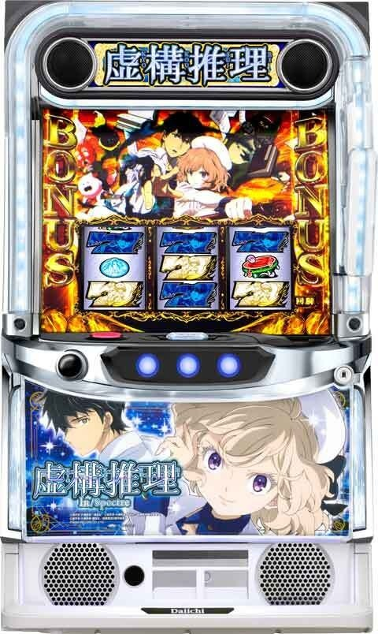
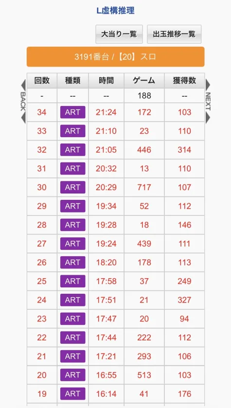
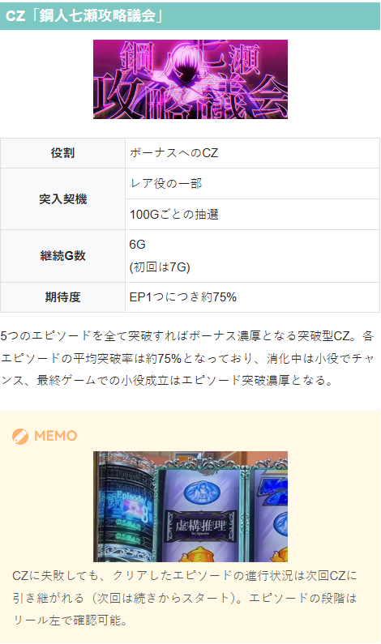
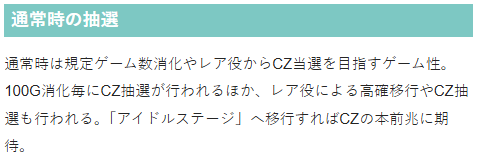
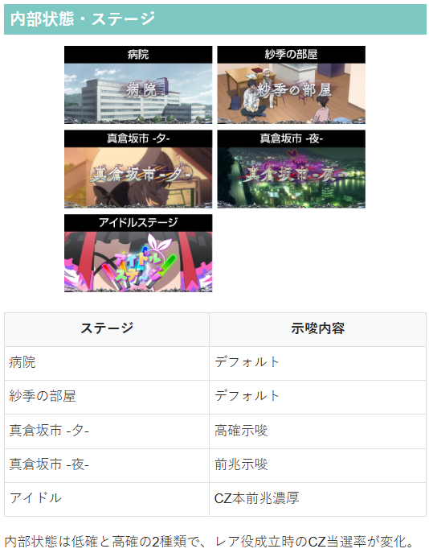

虚構推理


狙い目
【リセット狙い】
虚構真偽間 240Gから
※虚構真偽に当選するまで天井ゲーム数はリセットされない。液晶ゲーム数は虚構真偽間のハマりゲーム数
【ゲーム数天井狙い】
一撃1000枚未満後 虚構真偽間530Gから
一撃1000枚以上後 虚構真偽間600Gから
※虚構真偽に当選するまで天井ゲーム数はリセットされない。液晶ゲーム数は虚構真偽間のハマりゲーム数
※一撃1000枚以上後は虚構真偽の出玉性能が冷遇される傾向あり
【ゾーン狙い】
メニュー画面のCZ間ゲーム数の色が赤の場合、100G毎のゾーンでのCZ期待度が高くなる。
赤の場合 下二桁 70Gから
【示唆関連の押し引きについて】
エピソード
エピソード4 「CZ成功の50％で白7」の表記があればボーナス当選まで
エピソード5 「CZ成功の50％で白7」の表記が無くてもボーナス当選まで
【有利区間関連狙い】
不明
やめ時
ボーナス終了後は虚構連モードに移行するため50G過ぎを目安にやめ
ボーナス終了後は50G間、液晶G数が紫色となっており、虚構連モードを抜けていたら51G目に白色に変わる。
CZ失敗後は、CZ本前兆中に規定ゲーム数到達やレア役を引いた場合は数ゲーム様子見で回した方が良いかも？
その他
履歴
虚構真偽間のハマりG数は液晶G数で確認可能。
22回目の初当たりは天井で当選したと思われる（513+293+222＝1028）。
20.21回目の初当たりは通常時でボーナス当選し、ボーナス後の虚構連モードでボーナスが引けなかったため虚構真偽に入っていない。（液晶G数はリセットされてない）
29回目の初当たりは50G超えているが虚構真偽での当選と思われる。30回目の当選（ART 717G）は700Gの天井振り分けで当選したと思われる。
虚構連モードが長引いたり、虚構真偽の発動が遅い事もあるため、70-80G以内くらいの当選は虚構連モードでの当選のケースが多い。

CZとエピソードについて
CZで5つのエピソードを突破するとボーナス濃厚。
エピソードの進行具合はデモ画面を解除すればリール左側に表示されている。

ゲーム性

内部状態・ステージ

参考元
基本情報
- メーカー: D-light
- 機械割: 97.7% 〜 112.0%
- 導入開始日: 2026年04月06日（月）
- ゲーム性概要: ●大人気ミステリーアニメがスマスロで登場 ●通常時はレア役とゲーム数消化で当選するCZをクリアすればボーナス ●ボーナス後は虚構連モードへ移行し、ボーナスの連チャンを目指す ●ボーナスの純増は約6枚/G ●虚構連モードは期待度の異なるショート・ミドル・ロングの3種類が存在 ●ボーナス当選後は虚構真偽でボーナス種別昇格のチャンス ●虚構連中のボーナスは4種類で、消化中は虚構真偽ストック抽選あり


打ち方
打ち方・小役
打ち方（小役狙い）
「最初に狙う絵柄」 左リールにBARを狙う。 スイカ停止時以外、中・右リールはフリー打ちでOKだ。
「スイカ停止時」 中リールに赤7を目安にスイカを狙う。右リールはこぼしがないのでフリー打ちでOK。
「レア役の停止例」
変則押しはNG
押し順ナビ非発生時は左リール第1停止での消化を推奨する。
解析情報通常時
小役関連
小役確率
| 役 | 確率 |
|---|---|
| リプレイ | 1/8.19 |
| 共通ベル | 約1/21 |
| スイカ | 1/99.90 |
| 弱チェリー | 1/66.60 |
| 強チェリー | 1/309.13 |
| チャンス目 | 1/218.45 |
※レア役合算確率は1/30.45
内部状態関連
内部状態解説
おもに高確中は夕方ステージで示唆される。
内部状態
低確＜高確の2種類で、レア役成立時のCZ当選率が変化
弱チェリー・スイカで昇格抽選
高確移行率（設定1）
| 役 | 移行率 |
|---|---|
| スイカ | 53.0% |
| 弱チェリー | 53.0% |
［弱レア役］高確移行率
弱レア役（弱チェリーとスイカ）で高確移行を抽選。継続ゲーム数は15Gと30Gの2パターンがある。
鋼人七瀬攻略議会（CZ）
CZ概要
CZは5つのエピソードで構成されていて、すべてのエピソードをクリアできればボーナスに当選。 各エピソードの継続ゲーム数は6G（初回のみ7G）、消化中は小役入賞でクリアのチャンス、各エピソードの最終ゲームの小役はクリア濃厚だ。 一度クリアしたエピソードは ボーナス当選まで引き継がれる （エピソード4で失敗したら次回CZ当選でエピソード4からスタート）。
CZ性能
| 当選契機 | レア役での抽選、通常時100G消化ごとの抽選 |
|---|---|
| 継続ゲーム数 | 1エピソード6G（初回のみ7G） |
| 消化中の抽選 | 成立役に応じたエピソードクリア抽選、 最終ゲームの小役入賞時はクリア濃厚 |
| クリア期待度 | 約75%（1エピソードあたり） |
| 備考 | クリアしたエピソードはボーナス当選まで引き継ぎ |
CZ確率
| 設定 | 確率 |
|---|---|
| 1 | 1/124.5 |
| 2 | 1/121.9 |
| 3 | 1/118.6 |
| 4 | 1/112.5 |
| 5 | 1/107.1 |
| 6 | 1/103.5 |
「エピソード表示」 エピソードの段階はリールの左側に表示されている。
「エピソードクリア抽選」
エピソードクリア当選率
| 役 | 当選率 |
|---|---|
| リプレイ・ベル | 約50% |
| 弱レア役 | 約75% |
| 強レア役 | 100% |
※最終ゲームは小役入賞でクリア濃厚
最終ゲームのジャッジ演出成功でエピソードクリアとなり、次のエピソードへ進行。 内部的にクリアが確定した後も、各エピソードのゲーム数が残っている限り継続し、次以降のエピソードクリアのストック獲得が抽選される。
CZ開始時・一発クリア当選率
当選した場合はCZ開始時にムービーが流れて告知される。
各エピソード開始時・エピソードクリア当選率
各エピソード開始時に、設定に応じてクリア抽選をおこなう。漏れた場合は消化中の小役で書き換えを抽選、内部的にクリア濃厚状態のレア役は次セット以降のエピソードクリアストックが抽選される。
エピソードクリア当選率
| 役 | 当選率 |
|---|---|
| リプレイ・共通ベル | 50.0% |
| 弱レア役 | 75.0% |
| 強レア役 | 100% |
※最終ゲームは小役入賞でクリア濃厚
クリア確定後 次セット以降のエピソードクリアストック当選率
| 役 | 当選率 |
|---|---|
| 弱レア役 | 13.3% |
| 強レア役 | 100% |
「成功契機判別」
ランプ色ごとのクリア契機役
| 色 | 役 |
|---|---|
| 白 | 突入時の抽選でクリア |
| 青 | リプレイ |
| 黄 | ベル |
| 緑 | スイカ |
| 赤 | 弱チェリー |
| 紫点滅 | チャンス目 |
| 赤点滅 | 強チェリー |
各エピソードのラストで発生するジャッジ演出成功時のスピーカーランプの色で、今回のエピソードをクリアした契機を確認できる。
1回目の特殊抽選
設定変更後と虚構連モード終了後、1回目のCZを成功させてボーナスに当選した場合、54.0%でスペシャルボーナスに当選。
エピソード1で失敗した場合は、次のCZまで権利を持ち越しする（次のCZを一発成功させれば54.0%でスペシャルボーナス）。
CZの引き戻し当選率
| 終了時のエピソード | 当選率 |
|---|---|
| エピソード1or2 | 20.1% |
| エピソード3or4or5 | 15.4% |
CZ失敗時は、エピソードに応じてCZの引き戻しが抽選される。
エピソードの種別振り分け
CZ初回（設定変更後・虚構連モード後）のエピソードは振り分けで決定。設定変更後や虚構連モードでボーナスを引けなかった場合はエピソード2以上から始まりやすい。
［設定差ナシ］ 初回エピソードの振り分け
| エピソード | 設定変更後 | 虚構連モード駆け抜け後 |
|---|---|---|
| 1から | 79.7% | 67.0% |
| 2から | 12.5% | 28.0% |
| 3から | 5.5% | 3.5% |
| 4から | 1.6% | 1.0% |
| 5から | 0.8% | 0.5% |
CZ・AT当選率
CZ当選期待度
| 役 | 序列 |
|---|---|
| 弱チェリー | 低 |
| スイカ | ↓ |
| 強チェリー | ↓ |
| チャンス目 | 高 |
［高確中］CZ当選率（全設定共通）
| 役 | 当選率 |
|---|---|
| 弱レア役 | 27.2% |
| 強レア役 | 77.8% |
CZ間100G消化ごとのCZ当選率
| ゲーム数 | 当選率 |
|---|---|
| 100G | 調査中 |
| 200G | 調査中 |
| 300G以降 | 51.96% |
直撃抽選
共通ベル時・ボーナス当選率＆実質確率
通常時の共通ベル成立時は、CZとボーナスの直撃抽選がおこなわれる。100の倍数ゲーム到達後やレア役後以外で液晶がザワザワすれば、直撃抽選に当選しているかも!? なお、直撃抽選はCZやATの本前兆中はおこなわれない。
天井
天井到達時の雪女ストック個数振り分け
| ストック | 振り分け |
|---|---|
| 1個 | 約64% |
| 2個 | 約23% |
| 3個 | 約10% |
| 4個 | 約2% |
| 5個 | 約2% |
フリーズ
レバーフリーズ動画
スペシャルボーナス 六花、雪女ストック4個以上、輪廻転生、虚構連モードロングを獲得できる最強フラグだ！
解析情報ボーナス時
虚構連モード
虚構連モード概要
ボーナス後に必ず移行する、ボーナスの高確率状態。内部的にショート・ミドル・ロングの3種類が存在し、それぞれ継続（転落）期待度が異なっている。 ボーナス当選後はボーナス昇格ゾーンでボーナス種別を決定する。
虚構連モード性能
| 移行契機 | ボーナス終了後 |
|---|---|
| 継続ゲーム数 | 不定（転落まで継続・最大50G） |
| 消化中の抽選 | ボーナス（ボーナス昇格ゾーン）抽選、 一部で狂構神偽突入 |
| 虚構真偽確率 | 1/19.7 |
| 初当り時・期待枚数 | 551.3枚 |
| 備考 | ボーナス非当選のまま、 転落せずに50G到達で虚構真偽当選濃厚 |
虚構連モードの転落確率＆ボーナス当選期待度
| モード | 転落確率 | ボーナス期待度 |
|---|---|---|
| ショート | 1/20.98 | 約56% |
| ミドル | 1/53.55 | 約81% |
| ロング | 1/185.74 | 約95% |
おもな抽選内容
| 役 | 内容 |
|---|---|
| ハズレ含む全役 | ボーナス昇格ゾーン抽選 |
| レア役 | チャンス、未来決定直行もあり |
ハズレを含む全役でボーナス昇格ゾーン（基本的に虚構真偽スタート）を抽選するが、レア役なら未来決定直行（虚構推理ボーナス以上）のチャンス。ボーナス昇格ゾーン突入時の一部で狂構神偽に突入する。
ステージの示唆
| 開始画面 | 示唆 |
|---|---|
| 下記以外 | 全モードの可能性あり |
| 真倉坂市・夜 | ボーナス昇格ゾーン濃厚 |
| 琴子 | 虚構連ミドル以上濃厚 |
| 六花 | 虚構連ロング濃厚 |
虚構連モードの転落抽選詳細
虚構連モードからの転落契機は転落1枚役。左リール赤7狙い時は転落1枚役を判別できる。
転落1枚役成立時・虚構連モードからの転落率
| 設定 | ショート | ミドル | ロング |
|---|---|---|---|
| 1 | 42.9% | 23.4% | 6.2% |
| 6 | 42.7% | 22.5% | 6.1% |
虚構連モードからの実質転落確率
| モード | 転落確率 |
|---|---|
| ショート | 1/20.98 |
| ミドル | 1/53.55 |
| ロング | 1/185.74 |
ボーナス昇格ゾーン当選率
| 役 | 当選率 |
|---|---|
| レア役以外 | 4.3% |
| 弱レア役 | 4.3% |
| 強レア役 | 47.1% |
※レア役での当選時は未来決定直行 ※当選率は雪女非同行時の数値（同行中はさらにチャンス）
毎ゲームの成立役に応じて虚構真偽や未来決定を抽選。 内部的に虚構連モードから転落した後も、最大50G間（虚構連モード抜け後のステージチェンジ発生まで）はレア役で未来決定直撃抽選がおこなわれる。
虚構連モード転落後の50G間 レア役でのボーナス昇格ゾーン当選率
| 役 | 当選率 |
|---|---|
| 弱レア役 | 4.3% |
| 強レア役 | 47.1% |
虚構推理ボーナス
虚構推理ボーナス概要
赤7揃いで突入する、約100枚獲得できるボーナス。あやかしボーナスと同様に、消化中は雪女ストックが抽選される。
虚構推理ボーナス性能
| 当選契機 | 虚構連モード中のボーナスの一部 （ボーナス昇格ゾーンで昇格成功後の一部） |
|---|---|
| 獲得枚数 | 約100枚 |
| 消化中の抽選 | 雪女ストック抽選、狂構神偽高確率抽選あり!? |
| 終了後 | 虚構連モードへ |
「レア役は雪女ストックのチャンス」 ストック獲得時は液晶左に雪女が出現。エフェクトの色でストック数を示唆する。
狂構神偽高確率当選率
| 契機 | 当選率 |
|---|---|
| 虚構連モード中の虚構推理ボーナス当選時 | 2.8% |
雪女ストック当選率
| 役 | 当選率 |
|---|---|
| 弱レア役 | 3.9% |
| 強レア役 | 47.1% |
ボーナス確定画面の抽選
ボーナス確定画面の×・？・？でベルが揃った場合、内部的なボーナスがスペシャルボーナス以外であればスペシャルボーナスへの昇格を抽選。すでにスペシャルボーナスの場合は雪女ストックが抽選される。
×・？・？ナビでベル揃い時・ボーナス昇格当選率
| 当選しているボーナス | 当選率 |
|---|---|
| スペシャルボーナス以外 | 5.5%でスペシャルボーナスへ |
| スペシャルボーナス | 0.8%で雪女ストック当選 |
虚構推理ボーナススーパー＆スペシャルボーナス
虚構推理ボーナススーパー概要
青7揃いから突入。15Gの小役ゲームとベルナビ回数管理型の虚構JACを行き来して出玉を増やすゲーム性で、押し順ベル以外の小役が成立すれば虚構JACを獲得。 JAC中のベルナビ回数は3・6・9回のいずれかで、レア役では小役ゲームのゲーム数上乗せが抽選される。 1回のボーナスで500枚を獲得すれば雪女ストック＋虚構連ミドルへ、1000枚を獲得すると雪女ストック2個＋虚構連ロングへ移行する。
虚構推理ボーナススーパー性能
| 当選契機 | 虚構連モード中のボーナスの一部 （ボーナス昇格ゾーンで昇格成功後の一部） |
|---|---|
| 純増 | 約6枚/G |
| 継続ゲーム数 | 15G＋α（虚構JAC分） |
| 小役ゲーム中の抽選 | 押し順ベル以外の小役成立で虚構JAC獲得 ※レア役はナビ回数優遇 |
| 虚構JACのベルナビ回数 | 3・6・9回 |
| 虚構JAC中の抽選 | 小役ゲームのゲーム数上乗せ抽選 |
| 終了後 | 虚構連モードへ |
| 備考① | 15Gで一度も虚構JACに突入しないと、 15Gを再セット |
| 備考② | 規定枚数到達による雪女ストック ＋虚構連ミドル以上の当選あり |
成立役ごとの虚構JACのベルナビ回数
| 役 | ベルナビ内容 |
|---|---|
| リプレイ・共通ベル | 3回が多い |
| 弱レア役 | 6回以上に期待 |
| 強レア役 | 6回以上濃厚 |
虚構JAC中の小役ゲームのゲーム数上乗せ当選率
| 役 | 当選率 |
|---|---|
| 弱レア役 | 約40% |
| 強レア役 | 100% |
| ハズレ | まれに30Gを上乗せ |
獲得枚数ごとの恩恵
| 枚数 | 恩恵 |
|---|---|
| 500枚突破 | 雪女ストック1個＋虚構連ミドルへ |
| 1000枚突破 | 雪女ストック2個＋虚構連ロングへ |
※トータル枚数ではなく、1回の虚構推理ボーナススーパーでの獲得枚数
［獲得枚数での雪女ストック］ 規定枚数が近づくと、液晶右上に規定枚数までの残り枚数が表示される。
スペシャルボーナス概要
白7揃いはスペシャルボーナス。小役ゲームと虚構JACを繰り返して出玉を増やしていくという、基本的なゲーム性は虚構推理ボーナススーパーと同じだが、当選した時点で雪女ストックを1個以上獲得＋虚構連ミドル以上濃厚になる。
スペシャルボーナス性能
| 当選契機 | 虚構連モード中のボーナスの一部 （ボーナス昇格ゾーンで昇格成功後の一部） |
|---|---|
| 純増 | 約6枚/G |
| 継続ゲーム数 | 15G＋α（虚構JAC分） |
| 小役ゲーム中の抽選 | 押し順ベル以外の小役成立で虚構JAC獲得 ※レア役はナビ回数優遇 |
| 虚構JACのベルナビ回数 | 3・6・9回 |
| 虚構JAC中の抽選 | 小役ゲームのゲーム数上乗せ抽選 |
| 終了後 | 虚構連モードへ |
| 備考① | 15Gで一度も虚構JACに突入しないと、 15Gを再セット |
| 備考② | 規定枚数到達時の恩恵獲得あり!? |
獲得枚数ごとの恩恵
| 枚数 | 恩恵 |
|---|---|
| 500枚突破 | 雪女ストック2個以上 |
| 1000枚突破 | 雪女ストック3個以上＋虚構連ロングへ |
※トータル枚数ではなく、1回のスペシャルボーナスでの獲得枚数 ※ストック数にはスペシャルボーナスの恩恵分を含む
［雪女］
［琴子］
［六花］
キャラごとの恩恵
| キャラ | 恩恵 |
|---|---|
| 雪女or琴子 | 雪女ストック1個以上＋虚構連ミドル以上 |
| 六花 | 雪女ストック1個以上＋虚構連ロング |
※スペシャルボーナス開始時に表示されるキャラ
スペシャルボーナス開始画面によって雪女ストック数や虚構連ミドルやロングが示唆される。
［虚構連ショートorミドル滞在時］ 雪女ストック個数振り分け
| ストック | 初回 | 2回目以降 |
|---|---|---|
| 1個 | 65.5% | 81.7% |
| 2個 | 29.6% | 14.8% |
| 3個 | 3.3% | 2.8% |
| 4個 | 0.8% | 0.4% |
| 5個 | 0.7% | 0.4% |
［虚構連ロング滞在時］雪女ストック個数振り分け
| ストック | 初回 | 2回目以降 |
|---|---|---|
| 1個 | ー | ー |
| 2個 | 54.3% | 77.5% |
| 3個 | 23.1% | 11.3% |
| 4個 | 11.4% | 5.6% |
| 5個 | 11.3% | 5.6% |
滞在している虚構連モードおよび、スペシャルボーナスの回数によって当選時のストック個数振り分けが変化。虚構連ロング中は2個以上濃厚かつ、3個以上の振り分けも多い。
虚構JACのベルナビ回数振り分け
| 回数 | リプレイ 共通ベル | 弱レア役 | 強レア役 |
|---|---|---|---|
| 3回 | 91.2% | 70.4% | ー |
| 6回 | 8.1% | 27.0% | 77.0% |
| 9回 | 0.7% | 2.5% | 22.9% |
虚構JAC中の上乗せボーナスゲーム数振り分け
| 上乗せ | ハズレ | 弱レア役 | 強レア役 |
|---|---|---|---|
| 非当選 | 99.6% | 61.6% | ー |
| ＋5G | ー | 33.6% | 76.7% |
| ＋10G | ー | 4.1% | 21.2% |
| ＋20G | ー | 0.3% | 1.0% |
| ＋30G | 0.3% | 0.3% | 1.0% |
あやかしボーナス
あやかしボーナス概要
REG相当のボーナスで、虚構連モード中にのみ当選（初当りでは選択ナシ）。 消化中はレア役で雪女ストックが抽選される。輪廻転生へ移行することも!?
あやかしボーナス性能
| 当選契機 | 虚構連モード中のボーナスの一部 （虚構真偽で昇格失敗後） |
|---|---|
| 獲得枚数 | 約50枚 |
| 消化中の抽選 | 雪女ストック、輪廻転生抽選 |
| 終了後 | 虚構連モードへ |
雪女ストック当選率
| 役 | 当選率 |
|---|---|
| 弱レア役 | 18.4% |
| 強レア役 | 71.6% |
雪女ストック当選時・輪廻転生当選率
| 契機 | 当選率 |
|---|---|
| 雪女ストック当選 | 約10% |
雪女ストック当選時の約10%で輪廻転生を獲得できる。
エピソードボーナス
エピソードボーナス概要
通常時の第3停止フリーズを契機に突入する小役ゲーム100Gのボーナス（BAR揃い）。 消化中は虚構推理ボーナススーパーなどと同様に虚構JAC（ベルナビ）を獲得しつつ出玉を増やすゲーム性だが、エピソードボーナス中はベルナビ回数6回以上が必ず選択される。
エピソードボーナス中の虚構JACベルナビ回数振り分け
| 役 | ベルナビ6回 | ベルナビ9回 |
|---|---|---|
| リプレイ・共通ベル | 89.8％ | 10.2％ |
| 弱レア役 | 50.0% | 50.0% |
| 強レア役 | ー | 100% |
ボーナス昇格ゾーン
虚構真偽
虚構連モード中のボーナス当選時は、基本的に虚構真偽へ移行。10Gのボーナス昇格ゾーンで、成立役に応じて未来決定への昇格を抽選する。 未来決定移行で虚構推理ボーナス以上濃厚、失敗時はあやかしボーナスへ移行する。
虚構真偽性能
| 当選契機 | 虚構連モード中のボーナス当選後 |
|---|---|
| 継続ゲーム数 | 10G＋α |
| 消化中の抽選 | 虚構チャンス、未来決定抽選 |
| 成功後 | 未来決定へ（虚構推理ボーナス以上） |
| 失敗後 | あやかしボーナスへ |
| 成功期待度 | 約70% |
成立役ごとの成功期待度
| 役 | 期待度 |
|---|---|
| レア役以外 | 9.4% |
| 弱レア役 | 虚構チャンス濃厚 ※虚構チャンスの成功期待度は59.6% |
| 強レア役 | 100% |
「告知タイプは4種類」
告知タイプ
| タイプ | 告知タイプ |
|---|---|
| 琴子 | 小役告知 |
| 九郎 | チャンス告知 |
| 六花 | 違和感告知 |
| 鋼人七瀬 | 完全告知 |
虚構真偽開始時に、4種類の告知タイプを任意で選択できる。
「虚構チャンス」 弱レア役で突入し、4G以内に小役を引けば未来決定への昇格濃厚。 滞在中はゲーム数の減算がストップ、成功期待度は約60%だ。
虚構チャンス成功時・青7揃い以上昇格当選率
| 役 | 当選率 |
|---|---|
| リプレイ・共通ベル | 22.6% |
| レア役 | 100% |
虚構チャンス成功時の役を参照して、未来決定の種別を抽選。レア役で成功させた場合は青7揃い以上濃厚となる。
未来決定
虚構真偽成功後などに突入する、ボーナス種別の決定ゾーン。ここで揃った7絵柄に対応したボーナスに移行する。
未来決定性能
| 当選契機 | 虚構連モード中の抽選、虚構真偽成功後 |
|---|---|
| 継続ゲーム数 | いずれかの7揃いまで継続 |
| 赤7揃い | 虚構推理ボーナス |
| 青7揃い | 虚構推理ボーナススーパー |
| 白7揃い | スペシャルボーナス |
| 備考 | 未来決定に30G滞在でスペシャルボーナス濃厚 |
「赤7を狙え（基本ステージ）」 基本的に、最初は赤7を狙えが発生。 赤7が揃わなければチャンスステージへ移行するので、青7（虚構推理ボーナススーパー）以上濃厚になる。
赤7を狙え時の割合
| 種別 | 割合 |
|---|---|
| 赤7揃い | 62.1% |
| 赤7揃わず | 37.9% |
約38%で赤7がハズれて、チャンスステージへ移行。赤7を狙えが発生するまでの小役で、チャンスステージへの昇格を抽選する。 内部的には1枚役を引くと赤7揃い、リプレイを引いていれば赤7が揃わずにチャンスステージへ移行する。
チャンスステージへの昇格当選率
| 役 | 当選率 |
|---|---|
| レア役以外 | 2.0% |
| 弱レア役 | 20.3% |
| 強レア役 | 100% |
「青or白7を狙え（チャンスステージ）」 青7が揃えば虚構推理ボーナススーパー、白7ならスペシャルボーナス。
青or白7を狙え時の割合
| 種別 | 割合 |
|---|---|
| 青7揃い | 75.0% |
| 白7揃い | 25.0% |
ここでの成立フラグは1枚役なら2連7停止からの青7揃い、リプレイを引けば 3連7が停止する。
白7揃いへの昇格当選率
| 役 | 当選率 |
|---|---|
| 弱レア役 | 3.1% |
| 強レア役 | 40.2% |
青or白7を狙えまでのレア役では、白7への昇格を抽選する。
中押し時の停止出目に注目。3連7が止まれば1/2でスペシャルボーナスだ！
狂構神偽
虚構真偽の一部で突入する特殊なCZ。 全役で成功抽選がおこなわれ、成功時はスペシャルボーナス六花に当選。失敗しても虚構真偽へ移行するため、ボーナスは確約される。
狂構神偽性能
| 当選契機 | 虚構真偽の一部 |
|---|---|
| 継続ゲーム数 | 4G |
| 消化中の抽選 | 全役で成功抽選、レア役は成功濃厚 |
| 成功期待度 | 約50% |
| 成功後 | スペシャルボーナス六花へ |
| 失敗後 | 虚構真偽へ |
| 備考 | トータル獲得枚数が 1000枚を超えると突入のチャンス!? |
| 成功時・期待枚数 | 約3000枚 |
狂構神偽失敗後は、約500枚獲得で再び狂構神偽突入のチャンスになる（有利区間がリセットされた場合を除く）。
成功当選率
| 役 | 1～3G目 | 4G目 |
|---|---|---|
| リプレイ・共通ベル | 調査中 | 100% |
| レア役 | 100% | 100% |
輪廻転生
輪廻転生概要
さまざまな契機で突入する本機最強の状態で、未来決定で当選するボーナスが必ず青7以上になる（赤7はない）。さらに滞在中の狂構神偽は成功濃厚。 輪廻転生中は虚構真偽当選以上が濃厚で、虚構真偽に失敗する（あやかしボーナス当選）と終了。あやかしボーナス後は通常の虚構連モードへ移行する。
輪廻転生性能
| 当選契機 | あやかしボーナス中の雪女ストック時の一部、 ロングフリーズ後、虚構連モード終了時の一部 |
|---|---|
| 恩恵 | 虚構真偽当選濃厚、狂構神偽は成功濃厚 |
| 虚構真偽成功時 | 青7以上濃厚 |
| 虚構真偽失敗時 | あやかしボーナス後、虚構連モードへ |
| 期待枚数 | 3500枚以上 |
ツラヌキ・有利区間
ツラヌキ条件と恩恵
| 項目 | 内容 |
|---|---|
| 条件 | エンディング到達時 |
| 恩恵 | 雪女ストックを獲得（ほぼ2個） ＋虚構連ロング濃厚 |
［エンディング］
演出情報
通常時
ステージの示唆
| ステージ | 示唆 |
|---|---|
| 病院 | デフォルト |
| 紗季の部屋 | デフォルト |
| 真倉坂市・夕 | 高確示唆 |
| 真倉坂市・夜 | 前兆示唆 ※虚構連モード中はボーナス昇格ゾーン当選濃厚 |
| アイドル | CZ本前兆濃厚 |
| 琴子 | 虚構連ミドル以上濃厚 ※虚構連モード中のみ移行 |
| 六花 | 虚構連ロング濃厚 ※虚構連モード中のみ移行 |
［病院］
［紗季の部屋］
［真倉坂市・夕］
［真倉坂市・夜］
［アイドル］
［琴子］
［六花］ 琴子ステージと六花ステージは虚構連モード中専用のステージだ。
真倉坂市・夜の演出期待度
「液晶エフェクト」
液晶エフェクトの本前兆期待度
| エフェクト | 期待度 |
|---|---|
| 白線のみ | 約79% |
| 青文字 | 約30% |
| 緑文字 | 約81% |
| 赤文字 | 100% |
前兆中の液晶エフェクトは青文字＜緑文字＜赤文字の順に期待度がアップ、白のまま発展した場合は大チャンスになる（すべて発展時のエフェクト色）。
「連続演出」
連続演出期待度＆本前兆時の占有率
| 演出 | CZ以上期待度 | 占有率 |
|---|---|---|
| 出没!?鋼人七瀬（青） | 26.01% | 54.82% |
| 出没!?鋼人七瀬（緑） | 54.50% | 26.16% |
| 出没!?鋼人七瀬（赤） | 100% | 7.51% |
| 牛のあやかしを倒せ | 100% | 1.69% |
| 力士のあやかしを倒せ | 100% | 0.43% |
| 突発CZ告知 | 100% | 1.97% |
| ボーナス告知 | 100% | 1.73% |
| アイドルステージへ | 100% | 5.69% |
「出没!?鋼人七瀬」はタイトルの文字色で期待度が変化。〇〇のあやかしを倒せ系はCZ以上濃厚だ。 連続演出非経由でCZやボーナスを告知するパターンもあり、アイドルステージへ移行した場合はCZ本前兆濃厚となる。
［青タイトル］出没!?鋼人七瀬・CZ以上期待度 1G目
| パターン | CZ以上期待度 | 割合 |
|---|---|---|
| チャンスアップなし | 18.90% | 90.30% |
| チャンスアップあり | 92.52% | 9.70% |
2G目
| パターン | CZ以上期待度 | 割合 |
|---|---|---|
| チャンスアップなし | 18.35% | 89.74% |
| チャンスアップあり | 93.01% | 10.26% |
ジャッジ
| パターン | CZ以上期待度 | 割合 |
|---|---|---|
| PUSHボタンなし | 22.3% | 95.12% |
| PUSHボタンあり | 98.3% | 4.88% |
［緑タイトル］出没!?鋼人七瀬・CZ以上期待度 1G目
| パターン | CZ以上期待度 | 割合 |
|---|---|---|
| チャンスアップなし | 49.87% | 89.26% |
| チャンスアップあり | 93.86% | 10.74% |
2G目
| パターン | CZ以上期待度 | 割合 |
|---|---|---|
| チャンスアップなし | 49.21% | 87.76% |
| チャンスアップあり | 92.81% | 12.24% |
ジャッジ
| パターン | CZ以上期待度 | 割合 |
|---|---|---|
| PUSHボタンなし | 50.8% | 92.4% |
| PUSHボタンあり | 100% | 7.6% |
［赤タイトル］出没!?鋼人七瀬・CZ以上期待度 1G目：導入
| パターン | CZ以上期待度 | 割合 |
|---|---|---|
| チャンスアップなし | 100% | 90.76% |
| チャンスアップあり | 100% | 9.24% |
1G目：道中
| パターン | CZ以上期待度 | 割合 |
|---|---|---|
| チャンスアップなし | 100% | 81.56% |
| チャンスアップあり | 100% | 18.44% |
2G目
| パターン | CZ以上期待度 | 割合 |
|---|---|---|
| チャンスアップなし | 100% | 49.09% |
| チャンスアップあり | 100% | 50.91% |
ジャッジ
| パターン | CZ以上期待度 | 割合 |
|---|---|---|
| PUSHボタンなし | 100% | 74.1% |
| PUSHボタンあり | 100% | 25.9% |
牛のあやかしを倒せ・CZ以上期待度 1G目
| パターン | CZ期待度 | ボーナス期待度 | 割合 |
|---|---|---|---|
| チャンスアップなし | 83.05% | 16.95% | 92.84% |
| チャンスアップあり | 5.94% | 94.06% | 7.16% |
2G目
| パターン | CZ期待度 | ボーナス期待度 | 割合 |
|---|---|---|---|
| チャンスアップなし | 83.02% | 16.98% | 92.81% |
| チャンスアップあり | 6.53% | 93.47% | 7.19% |
ジャッジ
| パターン | CZ期待度 | ボーナス期待度 | 割合 |
|---|---|---|---|
| PUSHボタン | 81.9% | 18.1% | 92.74% |
| 赤PUSHボタン | ー | 100% | 2.51% |
| 特殊PUSHボタン | ー | 100% | 2.74% |
| 復活 | ー | 100% | 2.02% |
※赤PUSHと復活は虚構推理ボーナス以上、特殊PUSHはスペシャルボーナス以上濃厚
力士のあやかしを倒せ・CZ以上期待度 1G目
| パターン | CZ期待度 | ボーナス期待度 | 割合 |
|---|---|---|---|
| チャンスアップなし | 28.86% | 71.14% | 86.43% |
| チャンスアップあり | ー | 100% | 13.57% |
2G目
| パターン | CZ期待度 | ボーナス期待度 | 割合 |
|---|---|---|---|
| チャンスアップなし | 32.88% | 67.12% | 75.82% |
| チャンスアップあり | ー | 100% | 24.18% |
ジャッジ
| パターン | CZ期待度 | ボーナス期待度 | 割合 |
|---|---|---|---|
| PUSHボタン | 30.6% | 69.4% | 92.74% |
| 赤PUSHボタン | ー | 100% | 2.51% |
| 特殊PUSHボタン | ー | 100% | 2.74% |
| 復活 | ー | 100% | 2.02% |
※赤PUSHと復活は虚構推理ボーナス以上、特殊PUSHはスペシャルボーナス以上濃厚
［赤PUSH］
［特殊PUSH］
［出没!?鋼人七瀬（緑）］
［牛のあやかしを倒せ］
［力士のあやかしを倒せ］
夜ステージの滞在ゲーム数別・CZ以上期待度
| ゲーム数 | CZ以上期待度 | 割合 |
|---|---|---|
| 1G | 100% | 0.04% |
| 2G | 100% | 1.78% |
| 3G | 100% | 0.25% |
| 4G | 100% | 1.95% |
| 5G | 100% | 0.28% |
| 6G | 100% | 2.78% |
| 7G | 76.2% | 9.46% |
| 8G | 35.9% | 14.57% |
| 9G | 33.1% | 25.04% |
| 10G | 38.5% | 21.09% |
| 11G | 51.3% | 13.64% |
| 12G | 68.4% | 7.22% |
| 13G | 100% | 1.90% |
※CZ後に即夜ステージへ移行（CZ以上濃厚）した場合を除く
メニュー画面でのCZ当選示唆
メニュー画面の「鋼人七瀬攻略議会間ゲーム数」の枠色で、次の100G刻みのゲーム数到達時のCZ当選期待度を示唆している。 枠色は白＜青＜緑＜赤の順にチャンスだ。
※150Gで確認した画面は200GでのCZ当選期待度を示唆、250Gで確認した画面は300GでのCZ当選期待度を示唆
ボーナス関連
ボーナス中の特殊楽曲
| 楽曲 | 恩恵 |
|---|---|
| されど奇術師は賽を振る | 内部的に雪女ストックあり |
虚構推理ボーナス（スーパー）で楽曲選択ができず、「されど奇術師は賽を振る」が流れた場合は内部的に雪女ストックありが濃厚だ。
虚構連モード関連
ミニキャラでの虚構連モード滞在示唆
ミニキャラでの示唆
黒い狛犬が残ると虚構連モード滞在の期待度アップ
白と黒の狛犬両方が残ると虚構連モード滞在の期待大
レバーON時や第3停止時に狛犬出現で虚構連モード滞在の期待大
山のあやかしが3体出現で虚構連モード滞在の期待大 （レア役成立ゲームを除く）
セリフ演出の狛犬もチャンス
演出別・虚構連モード滞在期待度
| 演出 | 期待度 | |
|---|---|---|
| 狛犬出現 | 白が残る | 36.37% |
| 狛犬出現 | 黒が残る | 51.50% |
| 狛犬出現 | 両方残る | 滞在濃厚 |
| 狛犬出現 | 両方消える | 75.56% |
| 山のあやかし出現 | 1体 | 45.47% |
| 山のあやかし出現 | 3体 | 95.30% |
| 会話予告 | 狛犬 | 50%以上 |
| 機種説明予告 | 緑文字（※） | 滞在濃厚 |
※機種説明や版権説明の緑文字が対象
レバーONで狛犬が出現した場合は虚構連モード滞在期待度がアップする。
［狛犬］
［山のあやかし］